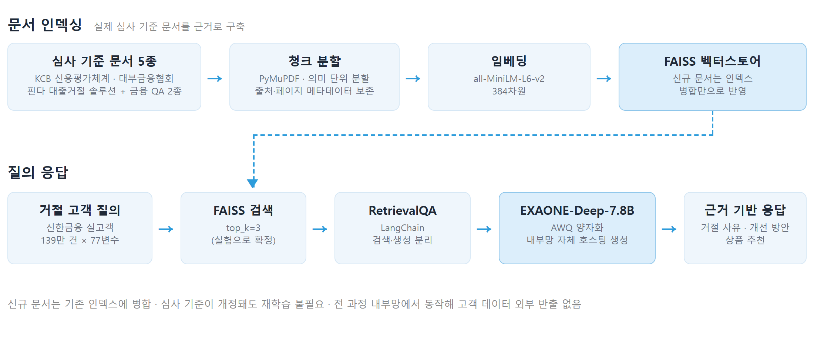
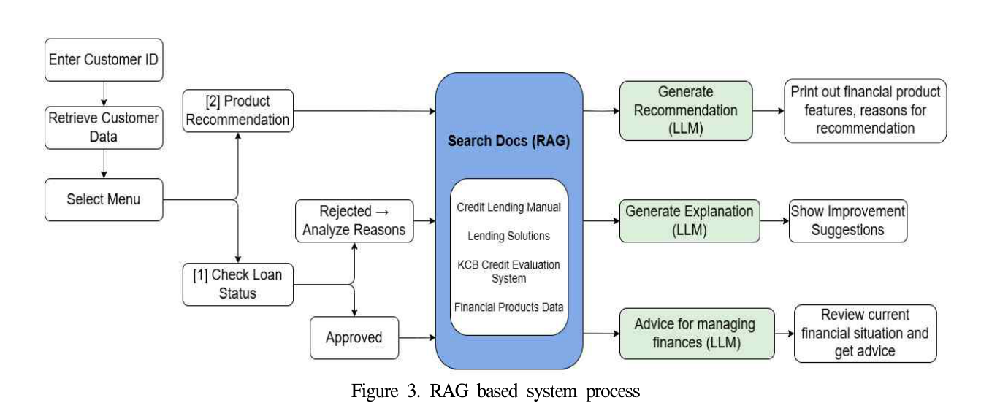
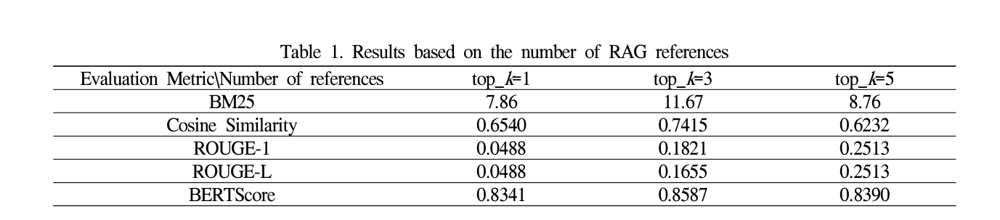

"신용점수가 낮습니다" 한 줄 안내를, 고객 본인의 수치와 심사 기준 문서를 근거로 한 맞춤 설명으로 바꾼 자체 호스팅 RAG.
신한금융 실고객 139만 건 · JKDAS 27(2) 제1저자 게재 · 단독 연구
01문제 정의
한 줄짜리 거절 안내
사전 작성 템플릿이라 개인 재무 상황이 반영되지 않음. 고객은 무엇을 얼마나 고쳐야 다음에 승인되는지 알 수 없고, 금융기관도 재신청으로 이어질 기회를 상실
비어 있는 피드백 영역
국내 금융권은 RAG를 내부 문서 검색과 상담 효율화에 도입(신한투자증권, KB국민카드)했으나, 개인 금융 상태를 분석해 맞춤 개선 전략을 제시하는 영역은 공백
LLM 단독 적용의 위험
환각과 개정 심사 기준 미반영. 심사 사유를 잘못 설명하면 고객에게 잘못된 행동을 유도
데이터 반출 불가
실고객 금융 데이터는 외부 클라우드로 보낼 수 없음 (개인정보·규정 리스크)
02시스템 설계
| 검토안 | 내용 | 판단 |
|---|---|---|
| 1안. 클라우드 LLM API (GPT 등) | 성능 최고, 구축 부담 없음 | 기각. 실고객 데이터를 외부로 보내는 순간 보안·규정 리스크 |
| 2안. 자체 호스팅 LLM 단독 생성 | 구조 단순 | 기각. 환각·개정 기준 미반영. 금융에서 사실 정확성은 타협 불가 |
| 3안. 자체 호스팅 LLM + RAG (채택) | 심사 기준 문서를 검색해 근거로만 답변 | 채택. 환각을 구조적으로 억제, 기준 개정은 인덱스 병합만으로 반영 |
- 모델 선택 기준은 성능 순위가 아니라 제약 조건의 순서. 내부망 모델 중 한국어 성능이 검증된 EXAONE-Deep-7.8B 선택, GPU 제약은 AWQ 양자화로 해결
- 효과를 입증하려면 비교 대상이 필요해 규칙 기반 시스템을 직접 구현. 동일 데이터와 동일 LLM을 사용하고 문서 기반 생성 여부만 다르게 두어, 성능 차이가 RAG 구조에서 온다는 것을 분리
03시스템 구조

| 영역 | 구축 내용 |
|---|---|
| 고객 데이터 | 139만 건, 최종 77변수. 결측 50% 이상과 상관 0.7 이상, 다중공선성 변수 제거. 심사 설명용 파생변수 4종 설계(신용점수, 대출금액 대비 소득, 월상환액 대비 소득, 카드 사용률). 대출 실행 이후 생성 변수를 제거해 데이터 누수 차단 |
| 근거 문서 | 심사 기준 3종(KCB 신용평가체계, 대부금융협회 신용대출 매뉴얼, 핀다 대출거절 솔루션) + 금융 QA 2종(rag-ko, financial-mmlu-ko). PyMuPDF 추출 후 의미 단위 분할, 출처와 페이지를 메타데이터로 보존해 답변 근거 추적 가능 |
| 검색 | all-MiniLM-L6-v2 384차원 임베딩, FAISS 벡터스토어, LangChain RetrievalQA. 신규 문서는 인덱스 병합만으로 반영되어 기준 개정 시 재학습 불필요 |
| 생성 | EXAONE-Deep-7.8B(AWQ 양자화) 내부망 서빙. 프롬프트에 "금융 문서 기반 판단, 구체적 수치와 기준 제시"를 명시해 일반론이 아닌 근거 기반 응답 유도 |
| 상품 추천 | 신한은행 금융상품 12종(예금, 적금, 주택청약, 펀드) 정형화. 가중치 기반 적합도와 임베딩 코사인 유사도의 평균으로 상위 3종 선정 후 추천 근거 생성 |

04평가 설계
응답 2종 분리 평가
거절 사유 및 개선 방안과 금융상품 추천으로 나누어 각각 평가. 거절 고객 10명을 무작위 추출해 평균 비교
기준선 설정
정답 라벨이 없는 생성 태스크라, 금융 전문가가 작성한 참조 응답을 기준선으로 설정
2축 평가 체계
검색 성능(BM25·Cosine)과 생성 성능(ROUGE·BERTScore)을 분리해 측정
지표 검증
검색 지표가 태생적으로 RAG에 유리함을 인지하고, 최종 응답을 직접 읽으며 수치·기준의 문서 정합성까지 확인
참조 문서 수(top_k) 결정

- 문서를 늘리면 좋아질 것이라는 예상과 달리 top_k=5에서 검색 지표 하락. 원인은 금융 문서 간 의미 중복으로, 문서를 늘려도 새 정보 대신 중복이 노이즈로 누적. 전 지표가 가장 높은 top_k=3 확정
05결과
| 평가 지표 | 규칙 기반 | RAG 기반 |
|---|---|---|
| BM25 (검색) | 6.71 | 11.67 (+74%) |
| Cosine Similarity (검색) | 0.60 | 0.74 |
| ROUGE-1 (생성) | 0.056 | 0.133 (약 2.4배) |
| BERTScore (생성) | 0.61 | 0.86 (+41%) |
동일 고객에 대한 응답 변화
규칙 기반. "연체 이력과 카드 사용, 낮은 계좌 잔고, 높은 금리가 재정 불안정을 나타냅니다. 카드 결제를 늘리고 연체를 관리하세요." (항목 나열, 기준·수치 없음)
RAG 기반. "고객님의 신용점수 695점은 권고 기준 700점에 미달합니다. 카드 이용률 72.6%가 높고 최근 2년간 신규 계좌 3개를 개설하셨으므로 기존 계좌 유지와 신규 개설 최소화를 권합니다." (본인 수치 · 기준 · 우선순위)
- 거절 안내가 "무엇을 얼마나 고쳐야 하는지"를 알려주는 설명으로 바뀌면서, 고객에게는 재신청을 위한 구체적 행동 지침이 되고 금융기관에는 거절 상담과 재심사에 활용할 수 있는 구조가 됨
- 심사 기준이 개정되면 템플릿 전면 수정 대신 신규 문서를 인덱스에 병합하면 끝. 전 과정이 내부망 자체 호스팅으로 동작해 고객 금융 데이터의 외부 반출 없음
- 금융상품 추천 응답은 BM25 9.42, Cosine 0.635로 관련 문서를 찾되 ROUGE-1 0.093(낮음)과 BERTScore 0.823(높음)의 괴리 확인. 문서를 그대로 인용하지 않고 의미를 재구성했다는 증거로 해석, 지표 하나만 봤다면 정반대 결론이 나왔을 사례
- 추천 응답에는 "연령 35세, 신용점수 695점, 균형적 위험 성향"처럼 고객 조건을 근거로 든 추천 이유와 금리 변동 영향 등 유의사항이 포함. 상품을 나열하던 방식에서 왜 이 상품인지를 설명하는 형태로 전환
- 연구 결과를 JKDAS 27(2) 제1저자로 게재